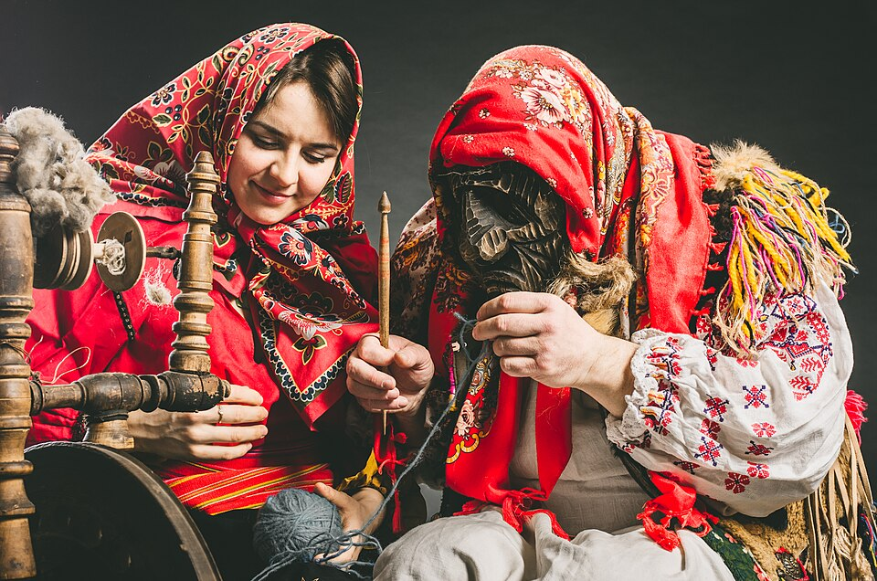
Уважение к старшим
Во всех культурах России старшие — хранители памяти: бабушки рассказывают сказки, дедушки учат ремеслу. А молодые почитают их слово и передают семейные истории дальше.
Страница о народном единстве
Свыше 190 народов живут на просторах России — и у каждого свой язык, свои песни и праздники. Но всех нас объединяют общие ценности: уважение к родной культуре, крепкая семья, честный труд и готовность прийти на помощь. Эта страница — о том, что делает нас великой страной.
Праздники передаются из поколения в поколение и рассказывают о главном: о хлебе, земле, семье и радости жизни. Вот лишь несколько из них.
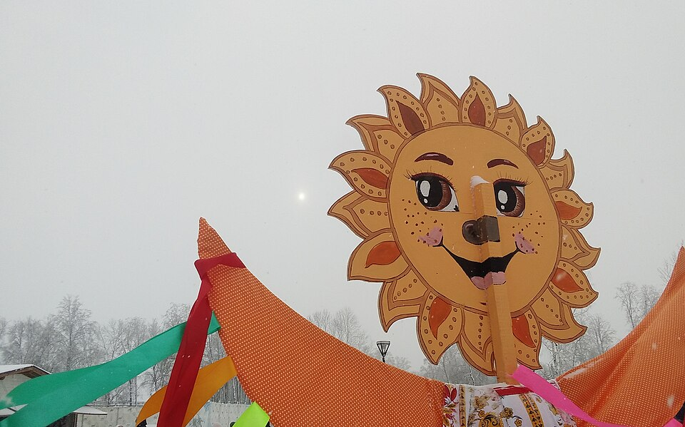
Проводы зимы встречают с песнями и блинами — круглыми и горячими, как весеннее солнце. В воскресенье просят друг у друга прощения, чтобы войти в новый период жизни с лёгким сердцем.
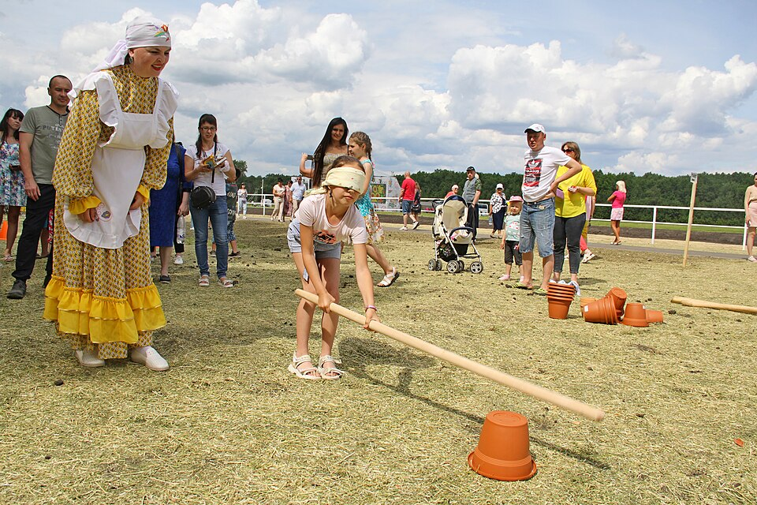
«Праздник сохи» у татар и башкир: весной, завершив посевную, люди сходятся на майдан — борются, бегают наперегонки, лазят на столб за призами. Сабантуй ждут всем аулом весь год.
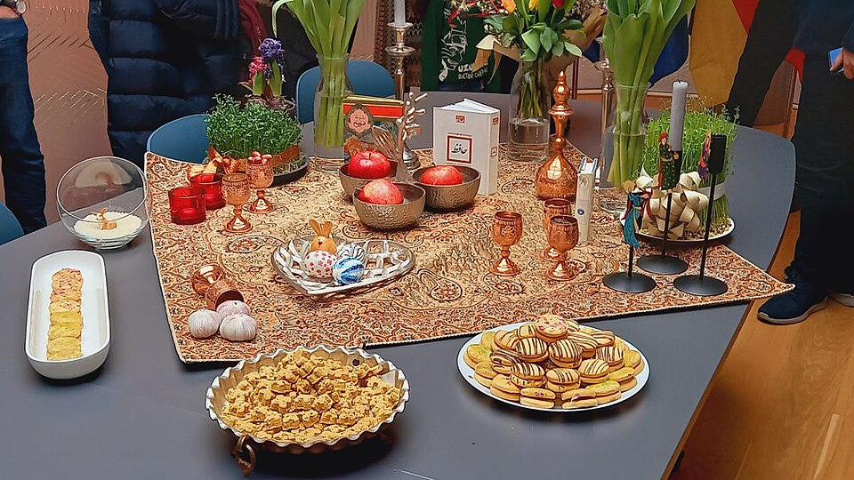
Праздник весеннего равноденствия отмечают народы Кавказа, Поволжья и многих стран Востока. Накрывают праздничный дастархан, проращивают зерно — символ нового урожая.
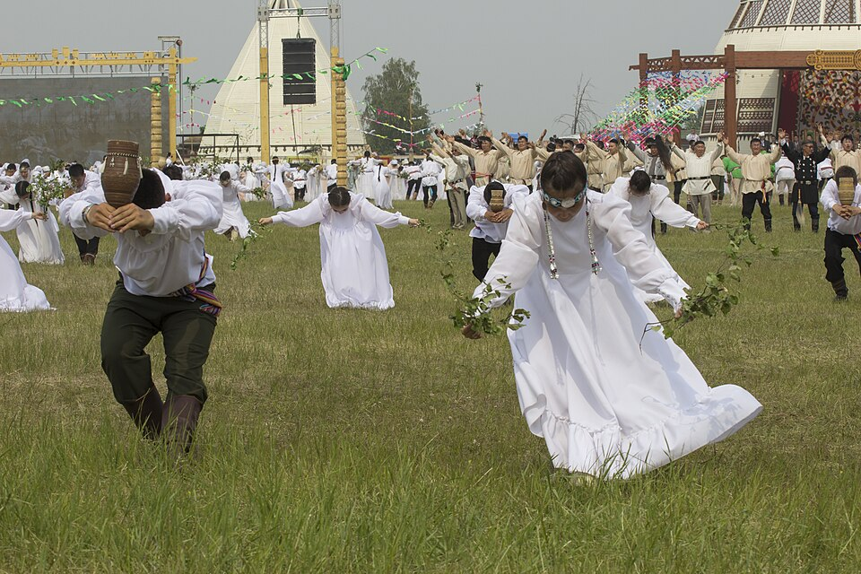
Летний праздник народа саха: встречают солнце и тёплое время, угощают кумысом, звучат алгыс — песни-благопожелания. Ысыах означает начало нового, обильного года.
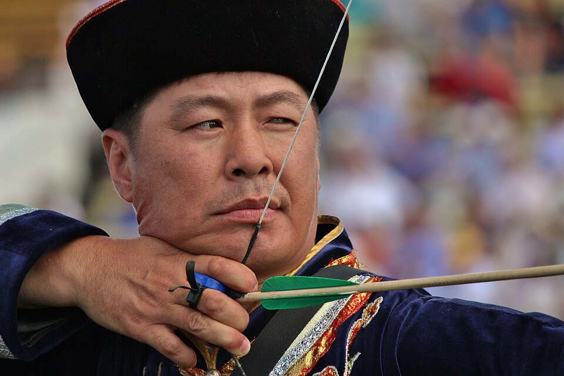
Летний праздник бурят: состязания в стрельбе из лука, борьбе и конных скачках. Так испокон веков проверяли ловкость и силу защитников родной земли.
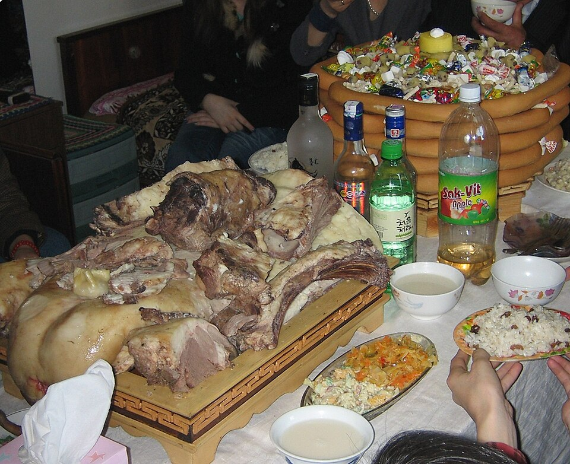
Новый год калмыков: хозяйки пекут праздничные печенья-боорцоги, а первыми в этот день поздравляют самых старших в роду, желая им многолетия и здоровья.
Семья — первая маленькая родина человека: именно здесь мы получаем язык, привычки и первые представления о доброте и честности.

Во всех культурах России старшие — хранители памяти: бабушки рассказывают сказки, дедушки учат ремеслу. А молодые почитают их слово и передают семейные истории дальше.
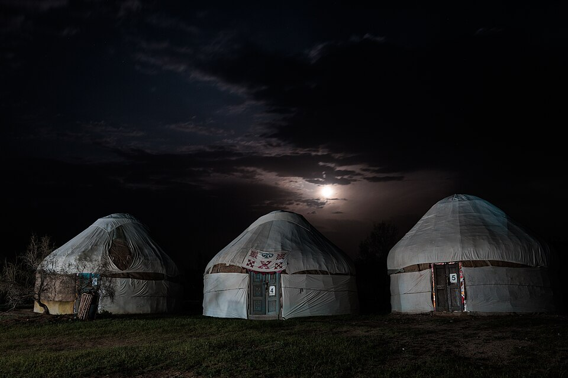
Дом собирает род на праздники и в трудные дни. где бы он ни стоял: у северян это чум у тёплого очага, у степняков — юрта с общим дастарханом, у горожан — уютная кухня.
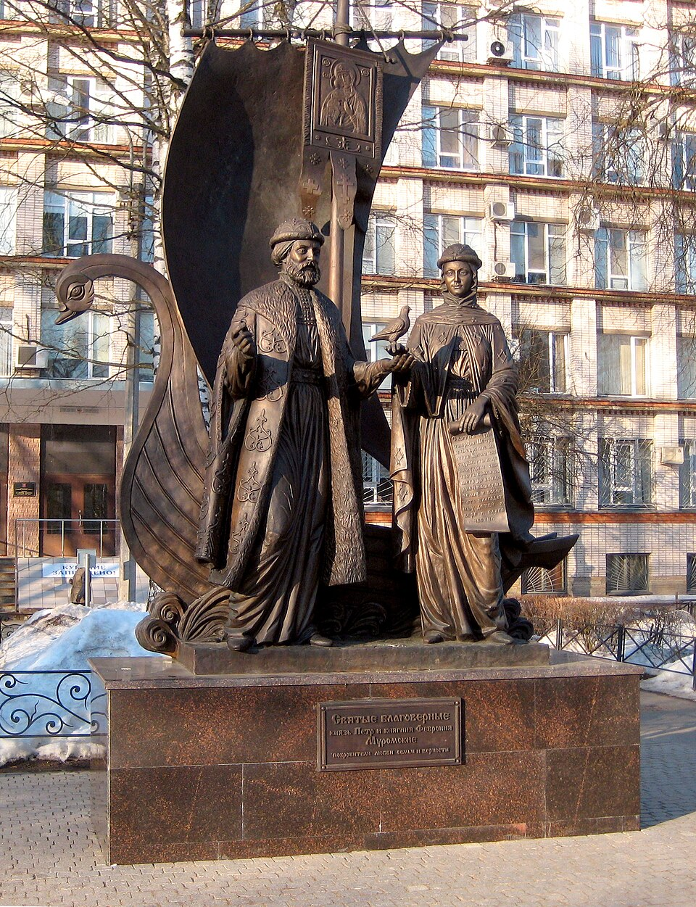
8 июля Россия празднует День семьи, любви и верности — в память о святых Петре и Февронии Муромских, чья преданность друг другу стала для многих примером на века.
«Семья — это маленькая родина: откуда бы человек ни был, его первые представления о доброте, честности и красоте родились именно здесь».
Страна держится на талантах: за каждым ремонтом, открытием и урожаем стоят трудолюбивые руки. Познакомьтесь с некоторыми профессиями.
Осматривает, ставит диагноз, спасает жизнь. Работа врача не знает выходных: днём — приём в поликлинике, ночью — дежурство у операционной. Едва ли есть профессия почётнее.
Ведёт детей в мир знаний: проводит первые уроки письма, учит понимать задачи и жить в дружбе с классом, где учатся ребята разных национальностей. Учитель — центр школьной жизни.
Возводит школы, мосты и уютные дома. Строители часто трудятся в бригадах, собранных из мастеров разных народов, — а кладут кирпич одинаково ровно и аккуратно.
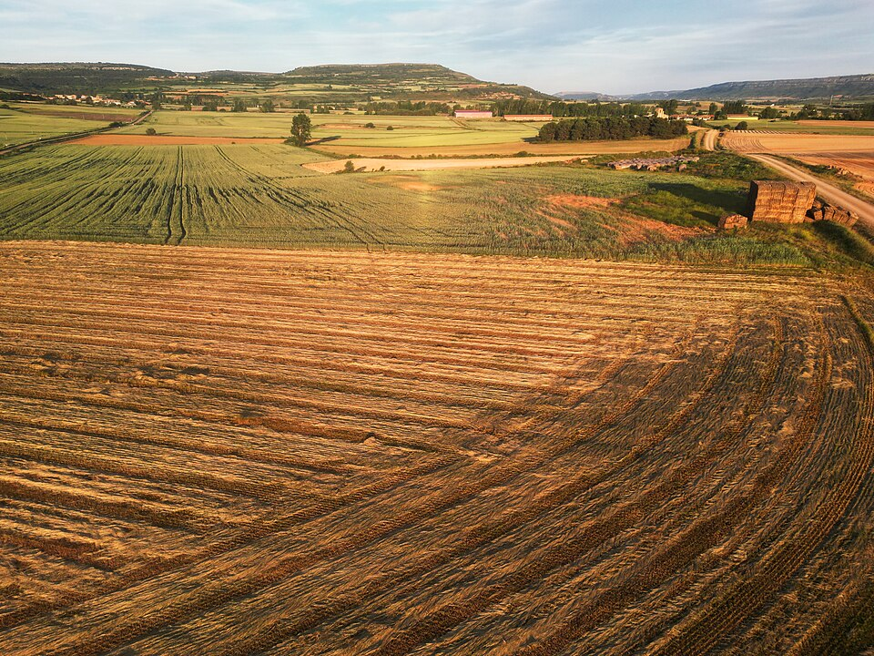
Растит урожай: выбирает семена, ухаживает за полями, изучает погоду и почву. Главная его учителя — терпение и наблюдательность: от них зависит, накормлена ли страна.
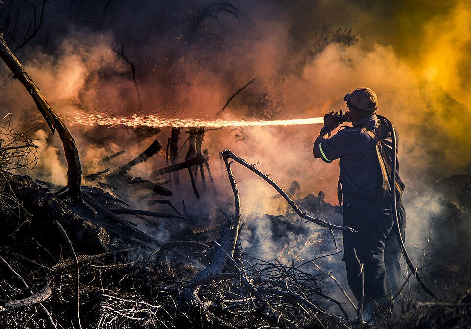
Идёт навстречу опасности: тушит пожары, достаёт людей из-под обломков, устраняет последствия наводнений. Профессия героя — будни без пауз и выходных.
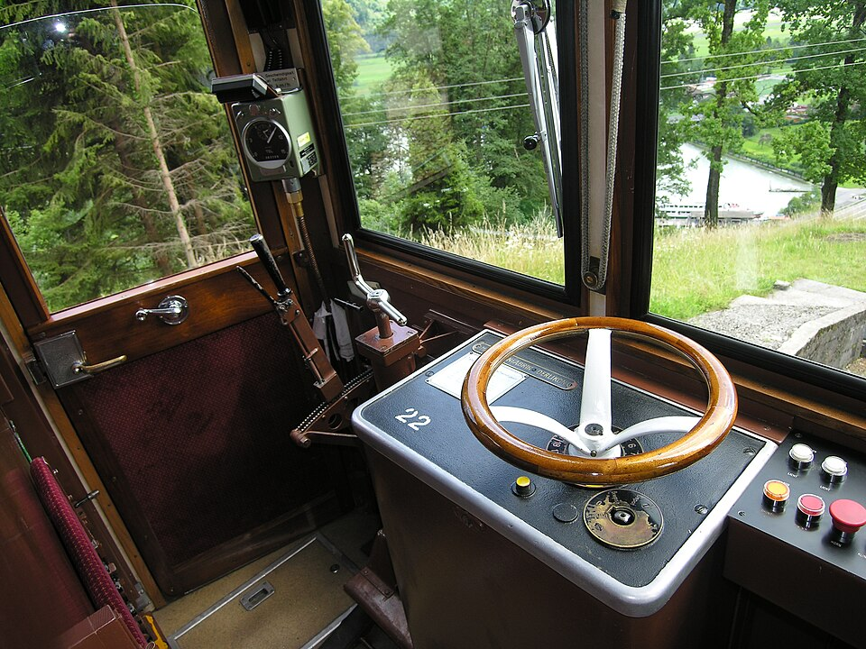
Ведёт поезд по маршруту: от пригородной электрички до скорого состава на дальнем маршруте. За плечами машиниста — тысячи безопасных километров и миллионы пассажиров, добравшихся вовремя.
Подвиг — это не только хроника военных лет. Он случается каждый день: там, где человек забывает о себе ради другого.
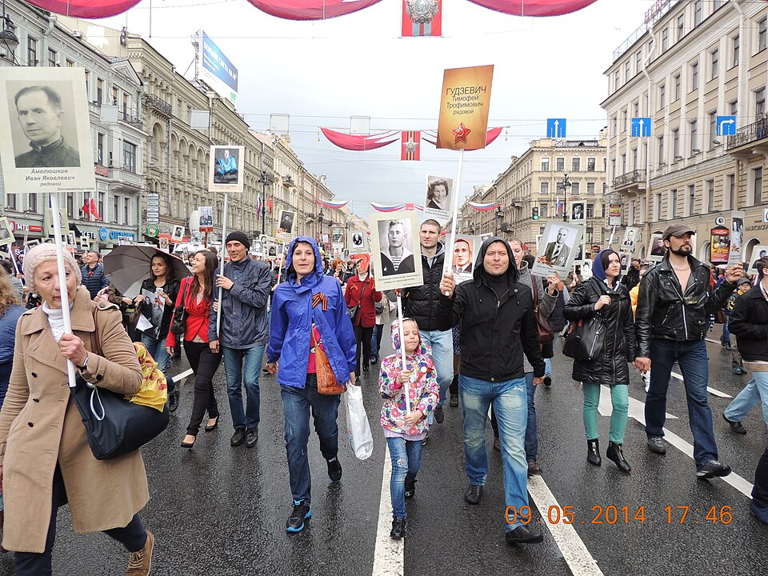
9 мая вся страна вспоминает тех, кто защитил Родину в годы Великой Отечественной войны. По улицам городов проходит «Бессмертный полк» — с портретами солдат, которым мы обязаны мирной жизнью.
12 апреля 1961 года Юрий Гагарин стал первым человеком в космосе. За его 108 минутами полёта стоял труд тысяч инженеров, конструкторов и испытателей — будничный героизм научных команд.
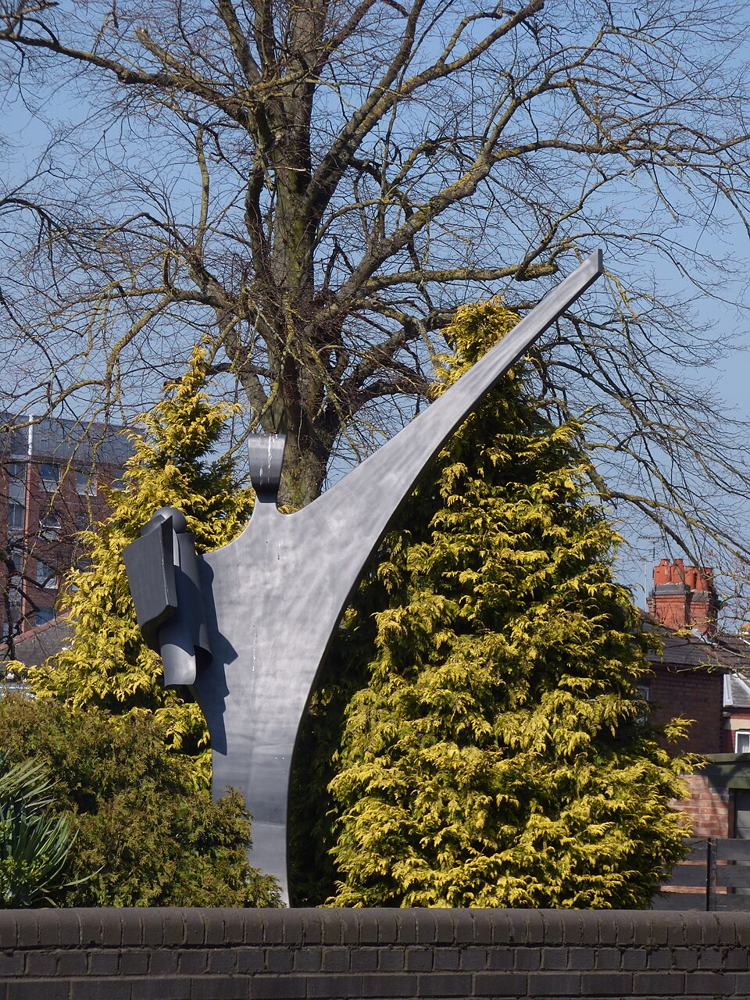
Пожарный, вынесший ребёнка из огня; донор, отдавший кровь сотням людей; прохожий, нырнувший к утопающему. Такие имена редко попадают в учебники — но именно из них соткана соль великой страны.
Проверьте, как вы усвоили материал страницы. Шесть вопросов, по одному правильному ответу в каждом.